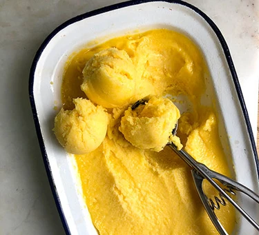

Luxurious Mango Sorbet

Description
Rich, luxurious sorbet perfect for those hot summer days
Ingredients
- 3 large, ripe mangoes
- 200g caster sugar
- 1 lime, juiced
Steps
- Peel the mangoes with a vegetable peeler, cut as much of the flesh away from the stone as you can, put it in a food processor or blender.
- Add the sugar, lime juice and 200ml water. Blend for a few minutes, until the mango is very smooth and the sugar has dissolved - rub a little of the mixture between your fingers, if it still feels gritty, blend for a little longer. Pour into a container and put in the freezer for a few hours.
- Scrape the sorbet back into the blender (if it is very solid, leave at room temperature for 5-10 mins first). Whizz until you have a slushy mixture, then pour back into the tin and freeze for another hour or so.
- Repeat step 3. Freeze until solid (another hour or two). Will keep covered in the freezer for three months.
Home